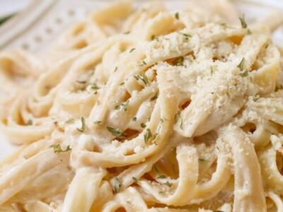

Fettuccine Alfredo

Description:
This iconic Italian dishes is one of my all-time favorites. While this may seem plain and easy to make, there are many different ways to make the sauce; from the most traditional way, which is really just pasta water and cheese, to contemporary methods that include cream. There are also many different ingredients and versions, like adding chicken or shrimp.
A brief history: The earliest known origins are mentioned as early as the 15th century in a recipe for "macaroni romaneschi," or Roman pasta, containing butter and cheese. The modern fettuccine alfredo was invented by Alfredo Di Lelio in Rome in 1892. Di Lelio later opened a restaurant called Alfredo alla Scrofa in 1914 and has been in operation to this day.
Ingredients:
Please note that you may not use all of the ingredients below. Some of them are extra in case you wat more of something and to make sure you have enough.
- Fettuccine noodles: 1lb
- Butter: 1 stick
- Heavy cream: 1 cup
- Salt: amount will vary
- Black pepper, ground: amount will vary
- Parmigiano regiano (not plain parmesan - it tastes way better, trust me): 2 cups (more at end is optional)
- Basil leaf, fresh (optional): 1/4 cup, chopped or cut
- Red pepper flakes (optional): Add to liking
- Olive oil (for pasta)
Directions:
- Cook the fettuccine according to package directions to aldente. *Before draining, set aside 2 cups of pasta water.*
- Drain pasta once cooked and set aside back into pot, add some olive oil or butter to keep noodles from sticking
- Heat sauce pan to low heat, add 1/4 stick butter, half the cream, and 1/2 cup of pasta water, salt, and ground black pepper.
- Now for the tricky part - slowly add the parmesan in bit by bit (not all at once). Do not let sauce simmer. Continuously stir. After each smallish portion of parmesan added, slowly stir/mix in and make sure it is melting into the sauce. Make sure it is not too thick and not too thin. If you like a strong, thick cheesey taste like me, add just enough cheese so that it is just liquid enough to pour. If too thick, add more pasta water. If too thin, add more parmesan and cream (not too much cream). Continue adding and mixing until you have a small amount of parmesan left. Taste while mixing to test if anything is needed (more parmesan, cream, or pasta water).
- Add in red pepper flakes to taste if desired
- Once sauce is to your liking, pour into the pot of fettuccine and mix.
- Put your portion of fettuccine alfredo onto your plate and sprinkle remaining parmigiano regiano on top or to liking.
- Garnish with basil leaf to liking